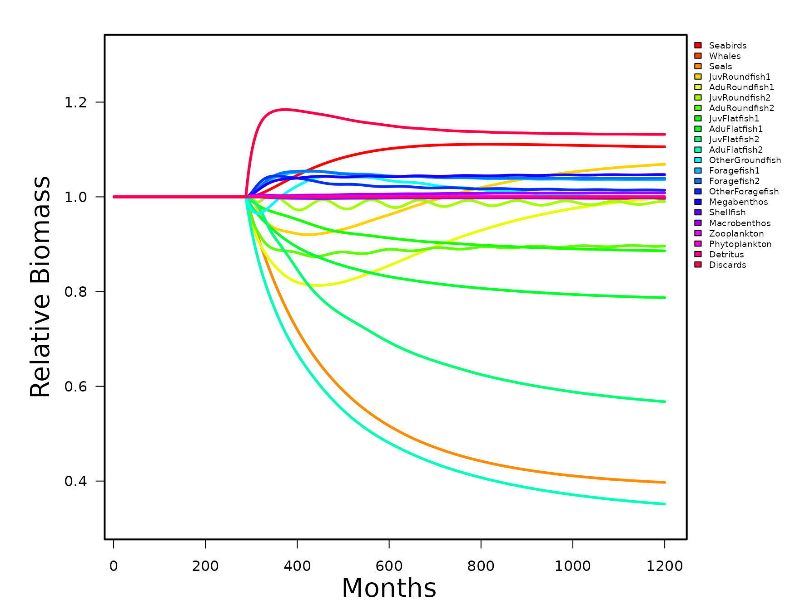

vignettes/RunRsim.Rmd
RunRsim.RmdRsim is the ecosim implementation of the EwE code in R. In order to proceed you must have a valid Rpath object. The steps for setting this up are described in the vignette “Rpath using R Ecosystem”.
Running rsim, is a three part process. First, the function
rsim.scenario is run to convert rpath parameters to rates.
Within rsim.scenario are 5 functions that initialize the
basic and stanza parameters, creates perturbation matrices for fishing
and other forcing functions, and a list of initial states. Arguments
passed to the rsim.scenario function are the Rpath object,
the rpath parameter object, and a vector of years corresponding to the
length of the simulation.
REco.sim <- rsim.scenario(REco, REco.params, years = 1:100)The second part of rsim is to add forcing functions or change the
fishing behavior. This is accomplished by changing the appropriate list
within the Rsim.scenario object created in the first step. There are a
series of adjust functions that will do this without having to know the
specific group numbers. For example, we can double the effort of the
trawler fleet after 25 years using the adjust.fishing
function.
REco.sim <- adjust.fishing(REco.sim, 'ForcedEffort', group = 'Trawlers', sim.year = 25:100,
value = 2)The final part is to apply the modified Rsim.scenario function to the
rsim.run function. The only arguments to the
rsim.run function are the Rsim.scenario object, the method
for numerical integration, and the length of the simulation. Rpath
allows for both Adams-Bashforth and Runge-Kutta 4 numerical integration.
Older versions of EwE use the Adams-Bashforth method while the latest
version (6+) uses Runge-Kutta (The default method for Rpath).
REco.run1 <- rsim.run(REco.sim, method = 'RK4', years = 1:100)The output from rsim.run is another S3 object class
called ‘Rsim.output’. Similar to the Rpath object created by
rpath, the generic function print will give
output similar to the ‘Ecosim results’ tab in EwE. If you want to save
the print results you need to use the function
write.rpath.sim. The function summary just
like for the Rpath object will display what other list items are
available.
Add code for rsim print…
In addition, there is a quick graphical routine for plotting biomass trajectories over time. Other plots similar to the group plots are possible but at this time we do not have a built-in function.
rsim.plot(REco.run1, groups[1:22])